不只城堡和教堂,「2026法国人最爱古迹」榜单上藏着好多惊喜
法国旅游发展署 ·

家人们，谁懂啊？！
前不久公布的「2026法国人最爱古迹」《Le Monument préféré des Français》榜单，法小旅又又又长见识了：不仅看到了潜水艇？天文台？？甚至还有游泳池？？？
这份每年由法国电视三台(France 3)发起、全法人民真情票选的最爱榜单，今年依旧很有看头，共有14处来自法国本土及海外领地的古迹入围，经过全民投票后，14强已正式揭晓。

今年换个玩法，先带大家认识榜单中的第14至第4名。熟悉的城堡、宫殿、教堂自然少不了，还多了一些完全意想不到的建筑类型，看完不禁要问：法法，你还有多少惊喜是朕不知道的？
| 本期揭晓 |
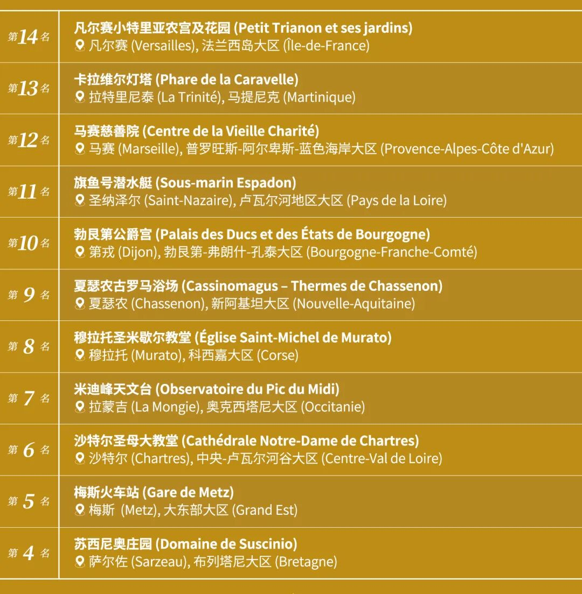
至于最终人气前三名，
留个悬念，下期揭晓！

城堡与宫殿
王室遗韵
第 14 名凡尔赛小特里亚农宫及花园
Petit Trianon et ses jardins
〔凡尔赛 · Versailles〕
法兰西岛大区
Île-de-France
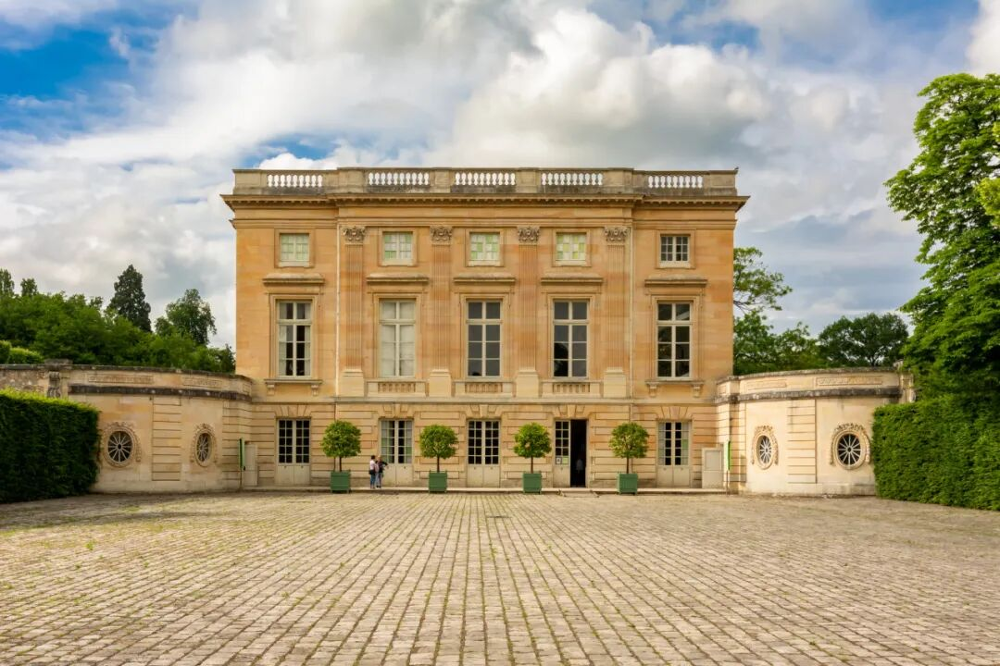
©iStock-Vladislav Zolotov
凡尔赛宫(Château de Versailles)里，除了金碧辉煌的大宫殿，还有一处更为私密的空间——小特里亚农宫。它最初由路易十五(Louis XV)下令建造，后来由路易十六赠给王后玛丽·安托瓦内特(Marie-Antoinette)。相比宫廷生活的繁复礼仪，这里更像是王后为自己打造的一方小小天地，诗意且天真。周围的花园和王后村庄(Hameau de la Reine)则是一派返璞归真的田园风光，和王后繁忙的宫廷生活相映成趣。
©iStock-lkonya
第 10 名勃艮第公爵宫
Palais des Ducs et des États de Bourgogne
〔第戎 · Dijon〕
勃艮第-弗朗什-孔泰大区
Bourgogne-Franche-Comté
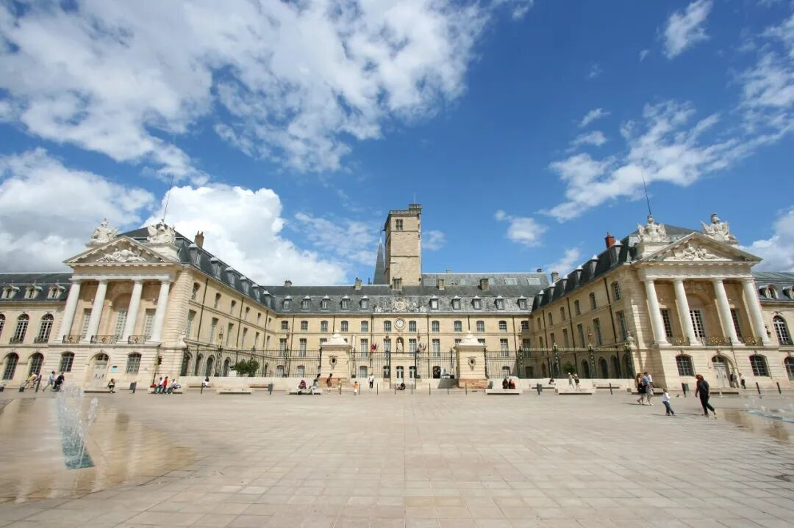
©iStock-tupungato
在法国东部的第戎(Dijon)，勃艮第公爵宫曾是强盛的勃艮第公国(Duché de Bourgogne)的权力中心。如今，这座建筑群的一部分成为第戎市政厅和第戎美术博物馆。
©Stock-Pixelbizz, iStock-Nicolas Salin
其中第戎美术博物馆(Musée des Beaux-Arts de Dijon)创建于1799年，是仅次于卢浮宫博物馆的最古老的博物馆之一，收藏着大量的佛兰德艺术珍品，严肃推荐！登上菲利普好人塔(Tour Philippe le Bon)，还能俯瞰第戎老城的屋顶与街巷。
第 4 名苏西尼奥庄园
Domaine de Suscinio
〔萨尔佐 · Sarzeau〕
布列塔尼大区
Bretagne
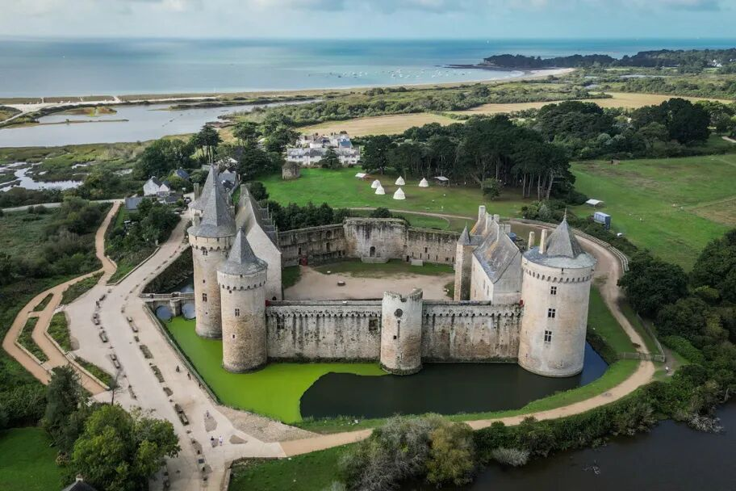
©iStock-gollykim
在布列塔尼南部的吕伊半岛(Presqu'île de Rhuys)，一座中世纪城堡静静坐落在森林、湿地与海岸之间。每当清晨水雾腾起，整座城堡就仿佛在童话故事里一样仙气飘飘。
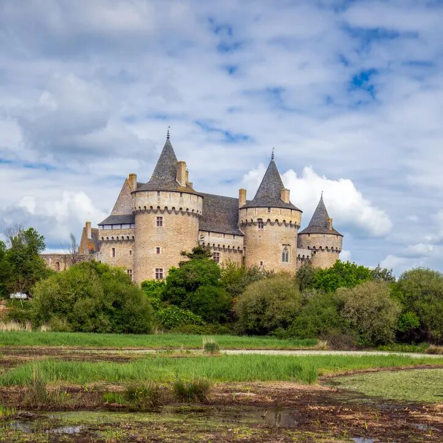
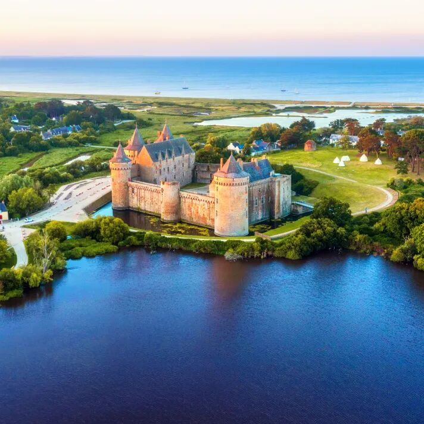
©iStock-DaLiu, iStock-Xantana
苏西尼奥最初是布列塔尼公爵的狩猎庄园，13世纪起逐渐发展为公爵家族的重要居所。到了14世纪，城堡不断增设护城河、吊桥、塔楼和防御设施，逐渐成为一座兼具居住舒适度与军事防御功能的宏伟堡垒。如今走进城堡，还能看到考古发掘出的中世纪厨房、酒窖，以及装饰精美的礼拜堂地砖，仿佛能窥见当年布列塔尼公爵的生活。

宗教建筑
信仰与艺术
第 6 名沙特尔圣母大教堂
Cathédrale Notre-Dame de Chartres
〔沙特尔 · Chartres〕
中央-卢瓦尔河谷大区
Centre-Val de Loire
©iStock-Razvan
沙特尔(Chartres)大教堂是法国哥特式建筑的代表之一。1194年的一场大火之后，教堂经历重建，如今仍保存着大量12至13世纪的彩绘玻璃。它闻名世界的沙特尔蓝(Bleu de Chartres)诞生于12世纪，中世纪工匠在玻璃原料中加入钴，创造出明亮、通透又格外纯净的蓝色。阳光穿过彩绘玻璃，整个教堂仿佛都被染上了一层梦幻的蓝光。
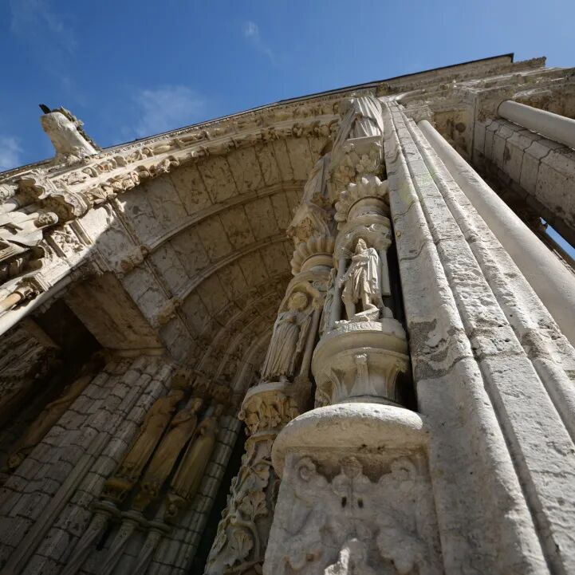
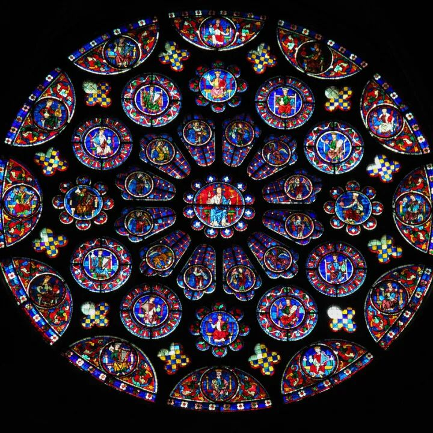
©iStock-Anthony SEJOURNE,iStock-Jorisvo
此外，这座大教堂的另一个看点是建筑，只正门外立面和两个塔楼就汇集了罗曼式、哥特早期、哥特晚期的三种风格，堪称中世纪建筑学教科书。1979年，沙特尔大教堂被列入联合国教科文组织世界遗产。
第 8 名穆拉托圣米歇尔教堂
Église Saint-Michel de Murato
〔穆拉托 · Murato〕
科西嘉大区
Corse
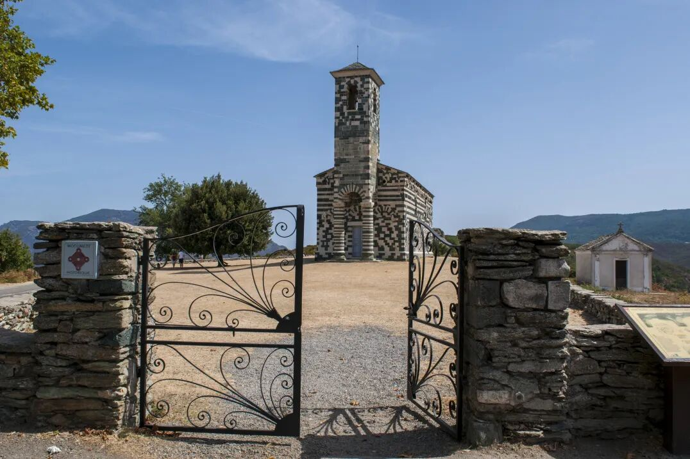
©iStock-Naeblys
这是一座位于科西嘉岛(Corse)的小小乡村教堂，建于12世纪，当时科西嘉岛处于比萨的势力范围之内，教堂也因此带有鲜明的比萨罗曼式建筑风格。
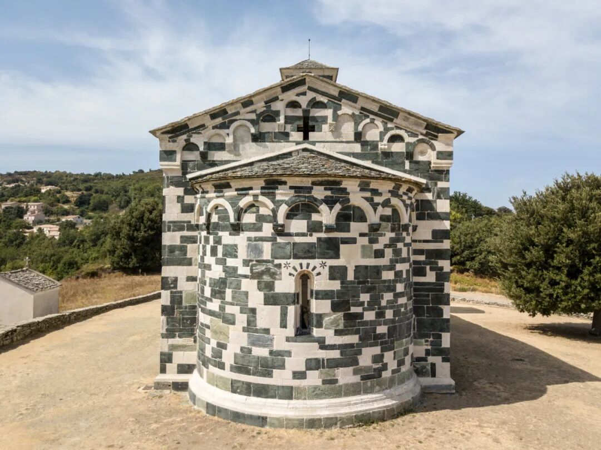
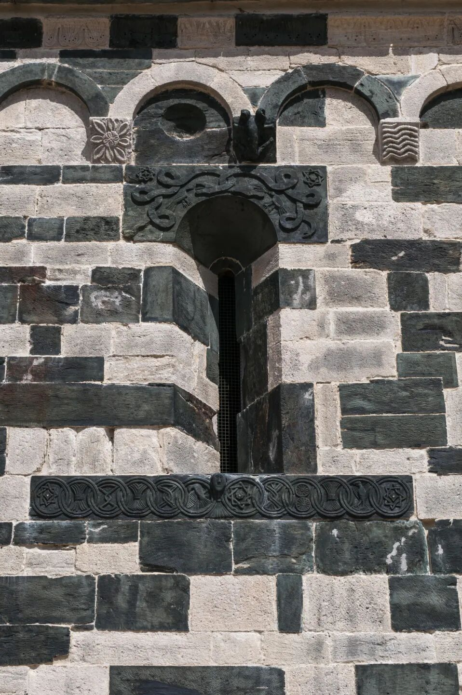
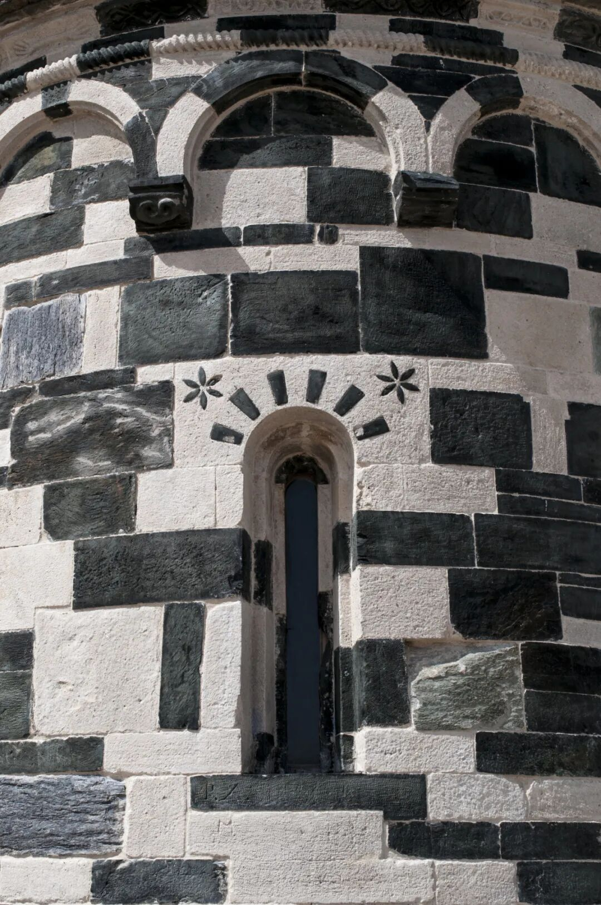
©iStock-Naeblys
它最醒目的特点是绿色蛇纹石与白色石灰岩交替砌筑，形成不规则的棋盘格与条纹图案。简直像一件富有视觉韵律感的珍宝盒。凑近仔细看，墙壁顶部，窗户周边，还能看到形态各异的人物和动物：蛇、鸟、双头蛙、麦穗、钱币、剪刀和断手等等，颇具神秘色彩，仿佛一部等待解读的中世纪图像故事。

公共建筑
普通人的生活
第 12 名马赛慈善院
Centre de la Vieille Charité
〔马赛 · Marseille〕
普罗旺斯-阿尔卑斯-蓝色海岸大区
Provence-Alpes-Côte d'Azur
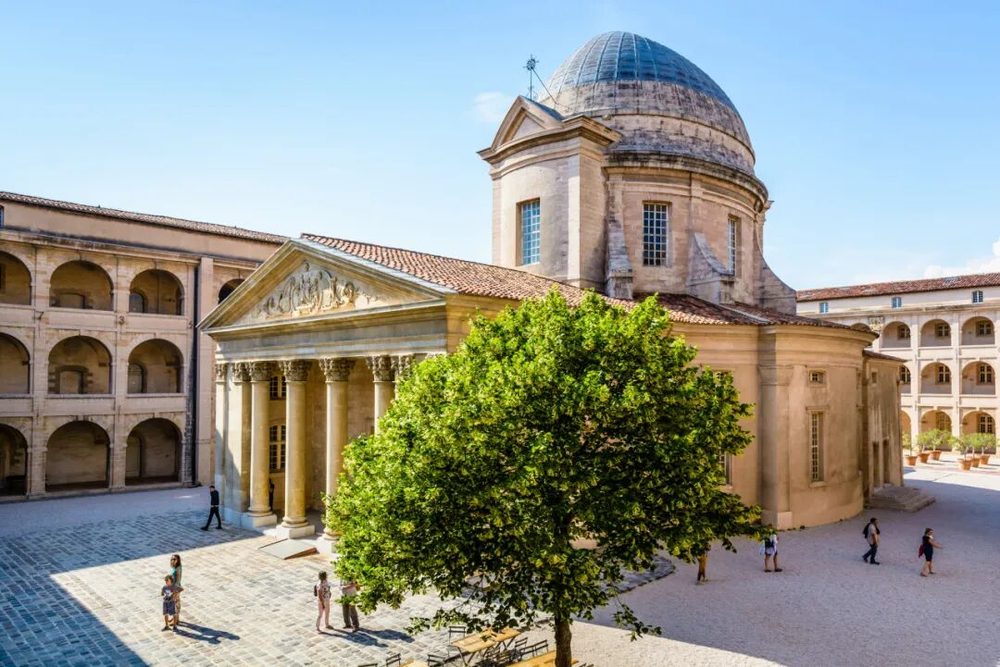
©iStock-Orlat
位于马赛(Marseille)老城区篓筐老街(Le Panier)的慈善院，建于17世纪，由建筑师皮埃尔·皮热(Pierre Puget)设计，是一座“方正不阿”的巴洛克风格建筑。院落中心是一座小教堂，四周环绕三层围廊。
©iStock-Orlat, iStock-Javier García Blanco
它最初并非为贵族或宗教人士服务，而是用于收容贫困者和乞讨者。此后，这里又经历了济贫院、军营和住房等不同用途，如今则是集博物馆、文化机构和展览空间为一身的文化中心。
第 9 名夏瑟农古罗马浴场
Cassinomagus – Thermes de Chassenon
〔夏瑟农 · Chassenon〕
新阿基坦大区
Nouvelle-Aquitaine
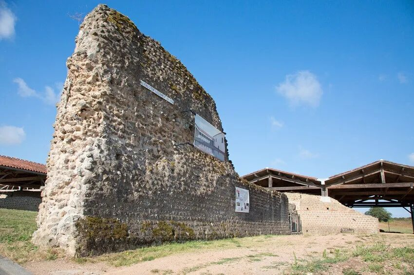
©Glen Recourt
位于法国夏朗德省(Charente)的卡西诺马古斯(Cassinomagus)遗址，曾是连接里昂(Lyon)与桑特(Saintes)的阿格里帕大道(Via Agrippa)沿线的一座古罗马城镇。这里的浴场建于公元2世纪初，是法国保存最完好的古代建筑遗址之一。
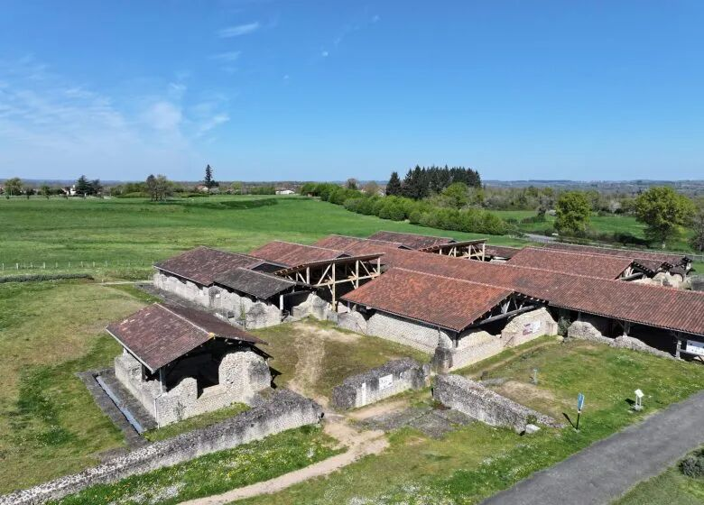
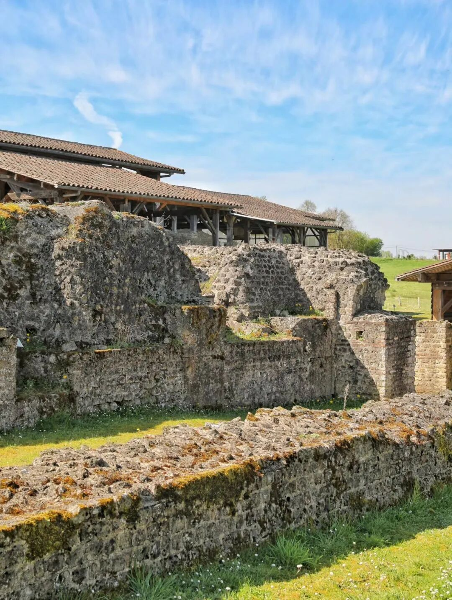
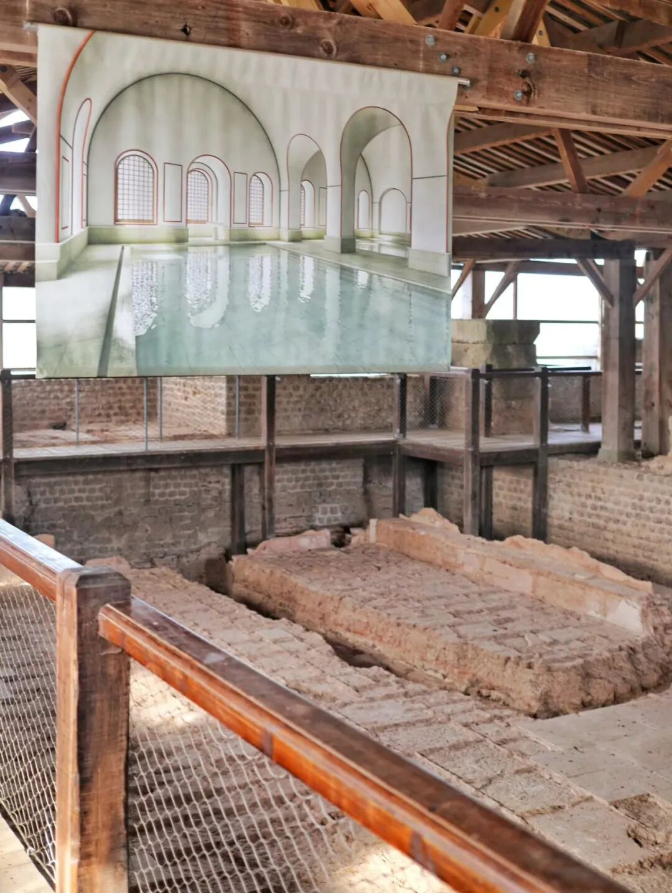
©angouleme tourisme, instegram-Thermes de Chassenon
经考古发现，当时的浴场已经拥有相当先进的供暖系统：地下铺设供热空间，通过12座炉灶加热水池和浴室，让人们可以依次体验热浴、温浴与冷浴...一套流程下来，要花费不少的时间，因此这里不仅是洗浴场所，也是休闲社交的公共空间~两千多年前的古罗马style依然时髦哇。
第 5 名梅斯火车站
Gare de Metz
〔梅斯 · Metz〕
大东部大区
Grand Est
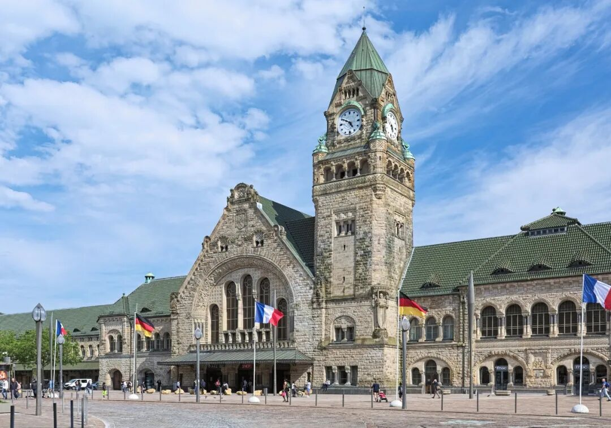
©iStock-klug-photo
梅斯(Metz)火车站建于1904至1908年，当时梅斯处于德国统治之下，它不仅承担交通功能，也肩负着政治与军事使命：既要满足快速运兵的战略需求，也要以宏伟建筑彰显德意志帝国的权力。
©iStock-OlyaSolodenko, iStock-Corinne Poleij
走进车站，出发大厅的巨大拱顶装饰着花卉与灰泥纹样，墙面则布满中世纪风格的拱廊与雕饰。最引人注目的，是专为皇帝准备的接待厅(Salon impérial)：木质穹顶、华丽壁炉，以及描绘中世纪帝王查理曼大帝的彩色玻璃窗。如今，车站仍在使用，每一处装饰都记录着梅斯地区复杂的德法历史。

特别古迹
意想不到的惊喜
如果你以为法国人最爱的古迹，
离不开城堡、教堂和历史宫殿，
那接下来的几处可能会让你有些意外。
它们有的仰望星空，有的深入海底，还有的守望着大西洋海岸线。它们或许不是传统意义上的“名胜古迹”，却同样记录着法国人的科学探索、工业发展与海洋历史。
第 7 名米迪峰天文台
Observatoire du Pic du Midi
〔拉蒙吉 · La Mongie〕
奥克西塔尼大区
Occitanie

©Luc Perrot
海拔2877米的米迪峰(Pic du Midi)，坐落在比利牛斯山脉(Pyrénées)之中。说句不夸张的，全法最美星空就在这里，没有之一。
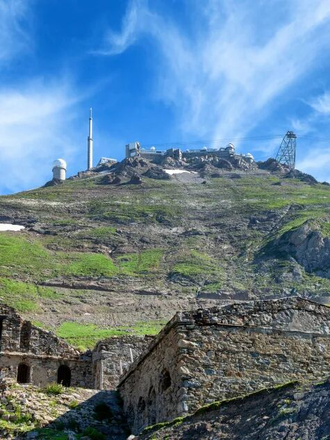
©iStock-philipimage
早在19世纪，科学家便开始在这里开展观测研究，1873年起逐步发展为天文观测基地。如今，天文台不仅仍承载着科学研究，也向游客开放。从拉蒙吉乘坐缆车可以直达天文台的露天平台。白天可以俯瞰连绵山脉，夜晚则有机会在远离城市光污染的高山之上仰望星空。想追星星可以在Pic du Midi官网上预定过夜套餐。
第 11 名旗鱼号潜水艇
Sous-marin Espadon
〔圣纳泽尔 · Saint-Nazaire〕
卢瓦尔河地区大区
Pays de la Loire
©tourisme pays redon, VBauza, iSaint Nazaire Agglomération Tourisme
旗鱼号潜水艇于1957年建造、1960年服役。1964年，它与姊妹艇“海豚号”(Marsouin)执行北极巡航任务，成为最早在北极冰层下航行的法国潜艇之一。服役25年间，它累计航行超过36万海里。
如今，旗鱼号停泊在圣纳泽尔(Saint-Nazaire)，成为法国首艘可供公众参观的潜水艇博物馆之一，游客还能走进艇内，感受潜艇官兵曾经的工作与生活空间。
第 13 名卡拉维尔灯塔
Phare de la Caravelle
〔拉特里尼泰 · La Trinité〕
马提尼克岛
Martinique
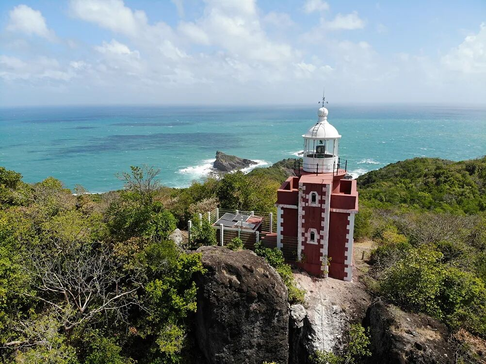
©Direction de la Mer de la Martinique
最后来到加勒比海上的马提尼克岛(Martinique)。卡拉维尔灯塔坐落在卡拉维尔半岛(Presqu'île de la Caravelle)自然保护区内，建于19世纪中期，灯光高度约为海拔162.55米，是法国海拔最高的灯塔。它曾为往来船只指引方向，如今则成为半岛徒步路线上的一处标志性景观。站在灯塔附近，既能眺望大西洋，也能感受马提尼克岛独特的海岸风光。
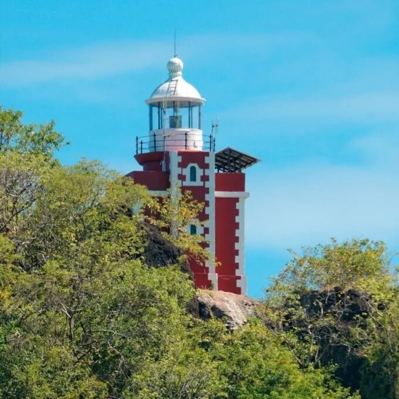
©iStock-thierry64, Parc Naturel Régional de la Martinique

从王室宫殿到古罗马浴场，
从中世纪教堂到
曾经驶入北极冰层下的潜水艇……
看完这一圈，
只能说法国的古迹真的太会藏惊喜了！
但别急，精彩还没结束！
这份榜单上真正的人气王究竟是谁？
下一篇，我们就来揭晓
2026年法国人最爱的古迹 TOP 3！


法小旅的官网有更多精彩消息